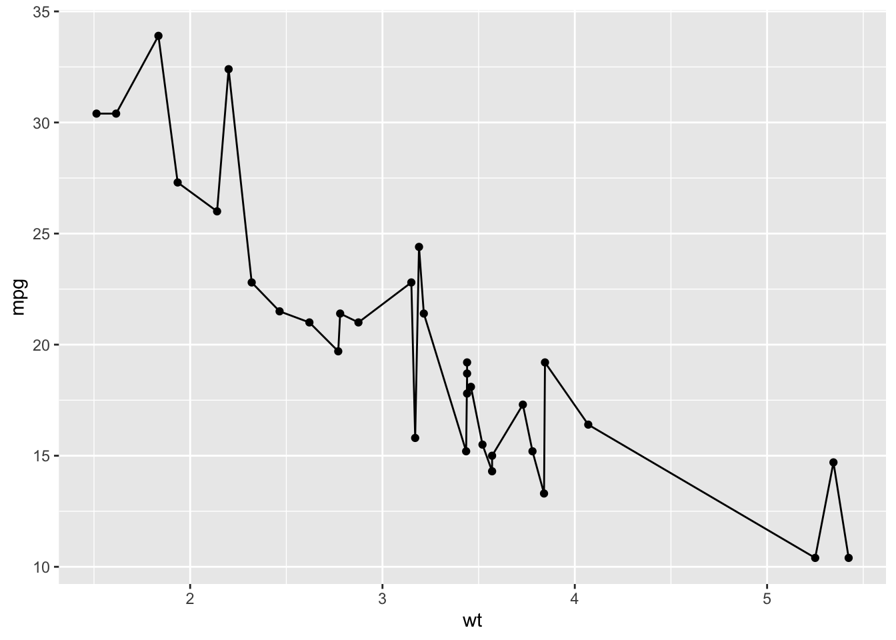

Chapter 1 Getting started with R
There is a lot of great material out there to get you started with R. I enjoyed swirl, which teaches basic R, in R. Whatever you choose, it is probably a good idea to familiarize yourself to some extent with basic R. Below, I only treat some of the basic stuff that is needed to run the code that is presented in the other chapters.
1.1 Running R
R is free and it is available for many different platforms. You can run plain R, run it from RStudio Desktop or even from a browser. I prefer Rstudio and the instructions are based on Rstudio as well. When you start Rstudio, you see a couple of windows, including a ‘Console’. This is the place where you can type your commands for R.
1.2 Using the command line
A classic in coding language is to print ‘hello world’. To do this, you need to type this piece of code (followed by the enter key) in the console:
print('hello world')
The result, printed below the code in the console is:
[1] "hello world"
In this document the input and output is shown as grey boxes. The first grey box represents the input and, if there is any output, the second grey box shows the output, for example:
print('hello world')[1] "hello world"It is possible to copy the code from the first box. When you move your cursor to the upper left corner of the box a copy icon will appear. If you click on the icon, the code is copied.
Not every piece of code results in a visible output, for instance when I assign a value to the variable x:
x <- 1To show the value of a variable as output, type its name:
x[1] 1R comes with datasets. Although these datasets are not so relevant for us, they are often used to demonstrate functions in R. One of these datasets is mtcars and we can use the head() function to check the first lines:
head(mtcars) mpg cyl disp hp drat wt qsec vs am gear carb
Mazda RX4 21.0 6 160 110 3.90 2.620 16.46 0 1 4 4
Mazda RX4 Wag 21.0 6 160 110 3.90 2.875 17.02 0 1 4 4
Datsun 710 22.8 4 108 93 3.85 2.320 18.61 1 1 4 1
Hornet 4 Drive 21.4 6 258 110 3.08 3.215 19.44 1 0 3 1
Hornet Sportabout 18.7 8 360 175 3.15 3.440 17.02 0 0 3 2
Valiant 18.1 6 225 105 2.76 3.460 20.22 1 0 3 11.3 ?Help
If you need help with a specific function, you may look at the documentation by typing a question mark followed by the function:
?head()However, I usually find myself googling instead of reading the documentation. The result is often a website where the correct use is explained by an example. It also make sense to experiment. Systematically changing variables or options (or outcommenting lines of code, see below) will teach you the logic behind a function or operation. Finally, there may be some answers in the chapter Questions and Answers
1.4 Installing packages
R comes with a lot of commands and functions, but we often need to load additional ‘packages’ to add functionality. The most important one that we use here is the {ggplot2} package that we use for the data visualizations. The package can be activated with the function require() or library():
library("ggplot2")The {tidyverse} package is very versatile and is a superpackage that hold several packages (including {ggplot2}). Loading the {tidyverse} package is like equipping R with superpowers. Often it is sufficient to load the {tidyverse} package.
The first time, the package has to be downloaded and installed. This handy piece of code checks whether the {tidyverse} package is available, downloads it if necessary and than activates it:
if (!require(tidyverse)) {
install.packages("tidyverse")
require(tidyverse)
}The output in the console depends on the packages that are installed and activated. For some specific functions, other packages are required, and these will be mentioned whenever they are used.
1.5 Multiline code
The tidyverse package introduces a so-called pipe operator %>% which we will use a lot. This operator is useful for stringing multiple functions together. An example is given below, which reads as ‘take the mtcars dataset and next use the head() function’.
mtcars %>% head() mpg cyl disp hp drat wt qsec vs am gear carb
Mazda RX4 21.0 6 160 110 3.90 2.620 16.46 0 1 4 4
Mazda RX4 Wag 21.0 6 160 110 3.90 2.875 17.02 0 1 4 4
Datsun 710 22.8 4 108 93 3.85 2.320 18.61 1 1 4 1
Hornet 4 Drive 21.4 6 258 110 3.08 3.215 19.44 1 0 3 1
Hornet Sportabout 18.7 8 360 175 3.15 3.440 17.02 0 0 3 2
Valiant 18.1 6 225 105 2.76 3.460 20.22 1 0 3 1Also for the plots that are generated with ggplot(), several functions can be added and these reflects different layers in the plot. However, in case of ggplot the layers are combined by a +:
ggplot(mtcars, aes(wt, mpg)) +
geom_point() +
geom_line()
It is important to end each line with a +, as it indicates that the code continues on the next line. This will result in a warning message:
ggplot(mtcars, aes(wt, mpg)) +
geom_point()
+ geom_line()The last line should not end with a plus. A trick that I use a lot, is using NULL on the last line of the code:
ggplot(mtcars, aes(wt, mpg)) +
geom_point() +
geom_line() +
NULLThe advantage is that it is easy to deactivate a line by placing a hashtag in front of it (without the need to remove the +). The hashtag tells R to treat that line as a comment and not as code:
ggplot(mtcars, aes(wt, mpg)) +
geom_point() +
# geom_line() +
NULLThis strategy is called ‘commenting out’ and is very useful to examine the effect of a line of code. For plots, it works very well in combination with NULL on the last line.